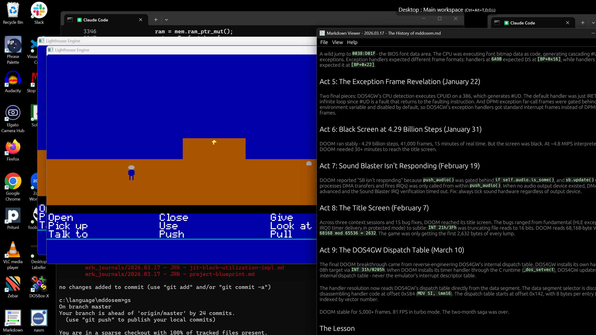

Lighthouse is a from-scratch reimplementation of the LucasArts SCUMM idea — bytecode-driven adventure games on 386 + VGA + Sound Blaster hardware — written to modern standards: 98.94% test coverage, libFuzzer on the VM, deterministic E2E play tests, and a Rust-based asset pipeline. This page walks the architecture, the bytecode VM, the content pipeline, the two games it runs, and how an unusually disciplined repository of plans + journals + reviews evolved over seven weeks.

A point-and-click adventure engine in the lineage of Monkey Island and Day of the Tentacle. Game code is not C — it’s bytecode, compiled from a small scripting language, loaded out of a resource pack. The C engine is a portable interpreter plus a SCUMM-style verb UI, walk-box pathfinding, dialogue trees, MIDI sequencer, and save system. Hardware is reached only through a function-pointer struct (platform_t), so the same engine compiles for DOS, Windows, and a headless host that pretends to be hardware while unit tests run.
WAIT_FRAMES, dialogue choices, walk completion, palette fades, and signals.lhasm), compiler (lhsc), packer (lhpack) — plus a Rust asset builder (lhbuild) and a Rust E2E test runner (lhscru)./* */ comments only, declarations-at-top, no <stdint.h>, no #ifdef in the portable layer.game.pak, parsed field-by-field (never struct-cast).Every frame, game_tick() in engine/src/core/engine.c walks a fixed sequence of fourteen stages. Hover any stage:
The architectural spine of Lighthouse is a hard rule: nothing in src/core/ includes an OS header or calls hardware directly. All hardware access goes through a struct of function pointers — platform_t — covering graphics, sound, music, input, timer, and file I/O.
Three implementations of that struct exist (or are stubbed in):
| Layer | Where | What it does |
|---|---|---|
| core/ | 22 .c files | VM, rooms, actors, verbs, dialogue, render, save — all portable. |
| host/ | Win32 + stubs | Fake timer, framebuffer-as-buffer, file passthrough — for unit tests. |
| win32/ | real Win32 | Real window, real input — for dev playtesting. |
| dos/ | VGA / mouse / timer wired; SB & MPU-401 stubbed | The shipping target. Real Mode 13h, real hardware interrupts. |
This split is why the engine has 329 fast unit tests. The fake timer is deterministic; the framebuffer is just a uint8 buffer that gets blit-recorded. Hardware never enters the test loop.
/* low-level — no game knowledge */ types.h /* uint8, int16, uint32 */ ↓ error · resource · strtable · platform /* the execution engine */ ↓ vm /* the script interpreter */ ↓ /* the world the VM acts on */ room · actor · object · walkbox · camera /* player-facing systems */ verb · dialog · sound · music_seq cutscene · credits · palette · font render · scene · inv_icon · save_ui /* the glue */ ↓ engine /* game_tick + lifecycle */ ↓ save /* serialise everything above */
Every subsystem owns its data and exposes init / update / render entry points. vm.h’s vm_state carries pointers to all the other subsystems’ state — that’s how a script can move actors, play music, or trigger a fade.
The heart of the engine: a stack-based interpreter with sixty-plus opcodes, sixteen cooperatively-scheduled scripts, a thousand 16-bit globals, and a runaway detector that kills any script doing more than ten thousand ops per frame.
Click one to inspect. The amber dot means “takes a 2-byte inline operand after the opcode byte.”
Each demo is a real uint8[] bytecode array — exactly the shape the VM consumes. The runaway limit (10,000 ops) and stack overflow (64 slots) are real checks the same way vm_exec_script() does them.
The VM doesn’t preempt; scripts yield. When a script hits WAIT_FRAMES, WAIT_SIGNAL, DIALOG_WAIT, WAIT_WALK, WAIT_SPEECH, WAIT_FADE, or WAIT_CREDITS, it parks itself in that wait state and vm_run_frame moves on. The engine’s update passes (actor walk, palette fade, dialogue) flip the corresponding flag when their work is done, and the script wakes up.
This is the whole point: a puzzle script can read like a screenplay — “walk to the drain; wait until you get there; play a sound; say a line; wait until you finish speaking; open the hatch” — without ever blocking the render loop.
backlog.md as intentional v1 scope, not a bug; it does mean a save in the middle of a cutscene rewinds you to the cutscene start.
Twenty-two source files in engine/src/core/. Click one — bar widths are a rough proxy for module weight from the coverage report.
game.pakThere is no story in the C. Every room, sprite, costume, dialogue line, and puzzle script lives in game.pak — a typed resource bundle the engine opens at startup. The pipeline turns authored content into that bundle.
| Tag | What |
|---|---|
| ROOM | Walk-boxes, exits, objects, walk-behinds, palette ref. |
| BGND | Background image — 320×200 raw indexed pixels. |
| SPRT | Sprite — fixed-size frame, palette-0 transparent. |
| COST | Costume — named animations & per-frame timing. |
| SCRP | Compiled bytecode for one script (entry, verb, dialogue). |
| STRT | String table — deduplicated, 16-bit IDs. |
| MUSC | MIDI event list with millisecond timestamps. |
| PCMA | Sound-effect PCM blob. |
Every binary read in loader.c and resource.c goes through one-byte helpers — read_u16(&buf[off]), never *(uint16*)buf. Two reasons:
That discipline is also what made the round-trip oracle tests easy: a hundred random game states → save → reload → byte-for-byte equal.
Lighthouse exists to ship games. Two are in this repository — one comic, one corporate.
Lighthouse is a deliberately polyglot project — C89 for the parts that have to run on a 386, Rust for everything else, JavaScript for the design prototype, and a sprinkle of Lua used purely as data.
lhasm, lhsc, lhpack), and DOS/Win32 platform layers. Strict mode — no //, no <stdint.h>, no mixed decls.lhbuild asset pipeline, lhscru E2E runner, and tests/full_test — a six-lane quality orchestrator (build, lint, coverage, fuzz, play tests).prototype/ — a complete HTML/canvas re-implementation of the SCUMM loop used as a design sketchpad before committing patterns to C.lhbuild at asset-build time; not embedded in the engine.build.sh, build.cmd, test.cmd — thin façades around Watcom wmake and Cargo. Same args either platform.| Tool | In | Out |
|---|---|---|
| lhasm | .asm (one opcode per line, labels) | raw bytecode .bin |
| lhsc | high-level script .lhs | bytecode + STRT |
| lhpack | manifest.txt + .bin files | game.pak |
| lhbuild | PNGs, .lua, .lhs sources | typed .bin files |
| lhscru | .emu play scripts | frame-hash pass/fail |
Six lanes, one Rust binary in tests/full_test/:
-Wall -Wextra -Wpedantic on the core.--coverage + llvm-cov → HTML report..emu scripts, checks frame hashes against goldens.Reports get written to tests/results/<date> - full test report.html.
Tests are written red-green TDD. They exercise real engine logic — no mocks of core subsystems. The primary verification pattern is the round-trip oracle: build state, serialise, deserialise, assert equivalence.
| Tier | Scope | Run |
|---|---|---|
| Unit | 329 functions, Unity framework | <5 s |
| Integration | Full game_tick w/ scripted input | Seconds |
| Property | 500 random walk-box configs, 100 random save states | Seconds |
| Fuzz | libFuzzer on the VM, 696K+ iters, ASAN | 30 s / hours |
| E2E play | 13 .emu scripts, 21 frame-hash assertions | Minutes |
| Static | clang strict warnings on core | Seconds |
error.c sits at 0% because fatal() calls abort() directly — unit-testable only with process isolation, which the project chose not to build. vm.c at 84.64% line coverage is dominated by defensive bounds checks on malformed bytecode that the fuzzer hits but the unit tests don’t target line-by-line. There’s no benchmarking infrastructure — “measure on real 386 hardware if it gets slow” is the stated approach.
From an empty directory on 16 March 2026 to a 5,100-line tested engine with two games and a Rust pipeline by 6 May 2026. Drag the marker:
This is the unusual bit. Lighthouse was built by a single human (committing as 0x4D44) working with multiple AI coding agents in parallel — and the protocol for that collaboration is itself in the repository, in AGENTS.md, CLAUDE.md, and a coordination file with rules like “file-level granularity; two agents must not edit the same file simultaneously” and “broken build, not your code? wait — don’t fix it.”
The paper trail this produced is striking:
wrk_docs/ — high-level designs, plan reviews, devil’s-advocate reviews, ranked concept docs, version-by-version refinements (some HLDs go to V4 or V6).wrk_journals/ — one per significant work session, often with the “phase summary table” pattern: phase, commit hash, tests added, key components.lhscru asserts.docs/architecture.md’s tick pipeline is a line-by-line description of what game_tick() actually does. Rare.backlog.md as a shipping blocker. There’s no room-scoped allocator yet; rooms malloc() and forget.lhasm, lhsc, lhpack are exercised via the engine’s integration tests, but there are no “assemble this input, compare bytes against a checked-in expected” tests. A regression in the assembler could ship.There are four versions of the High-Level Design for the engine itself — HLD - Adventure Game Engine.md, V1, V2, V3, V4. The repo keeps all of them. Reading them in order is a clean tour of how the architecture was reasoned about: V1 has scripts as C functions; V4 has the bytecode VM.
Before committing the SCUMM loop to C89, the author built the whole thing in prototype/ as plain HTML + canvas — engine.js, renderer.js, actor.js, ui.js, audio.js. It’s a complete miniature point-and-click in 7 files. The integration patterns from the JS prototype show up almost line-for-line in the C engine.
The Professor Splodgkins antagonist is a drain-inspection robot snake that absorbed a beta copy of Encarta — partly in Spanish. Its dialogue glitches mid-sentence into Spanish during villainous monologues. The codebase has no special infrastructure for this; it’s just careful string-table authoring.
The hero shot at the top of this page is from 2026-03-17 — one day after the engine was started. By then the host build was already running, rendering a room, scrolling the camera, and accepting verb clicks. The full SCUMM verb grid (Open, Close, Give, Pick up, Use, Look at, Talk to, Push, Pull) is wired through to the dispatch system.